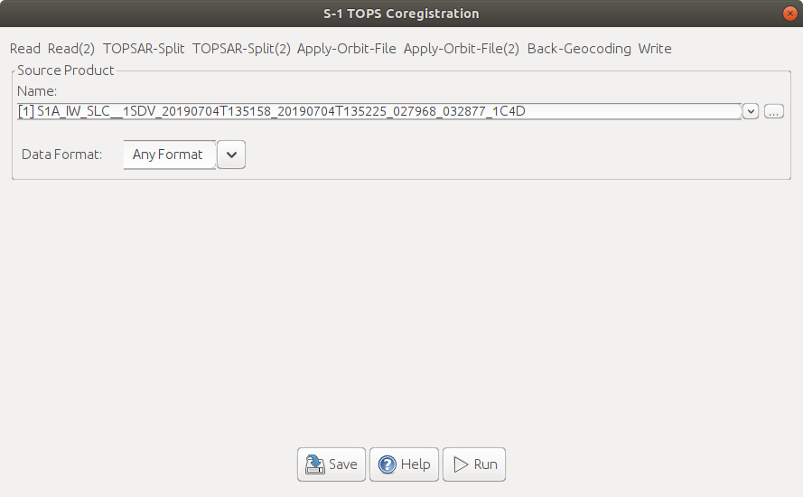
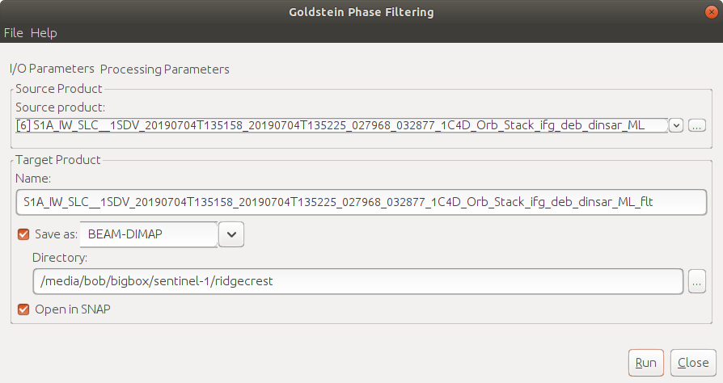
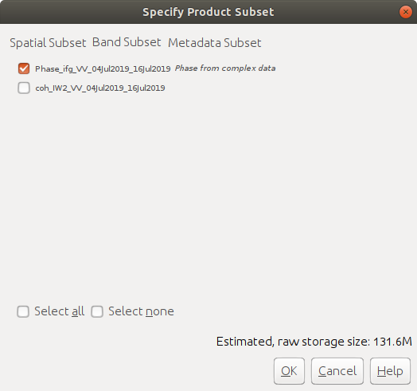

InSAR Processing
Contents
InSAR Processing#
For this week’s practical, we’ll learn the steps of processing a SAR image from a focused, Level-1 SLC (single-look complex) image, through to a terrain-corrected interferogram that you can use to estimate surface displacement. In particular, by the end of this practical, you will be able to use SNAP to:
co-register and stack a pair of SAR images
form an interferogram from a stacked pair of images
examine the coherence between two images
subtract topographic phase from an interferogram
use filtering to improve the phase coherence between two images
The images we’ll be using are a pair of Sentinel-1A interferometric wide swath (IW) scenes, acquired 4 July and 16 July 2019, before and after the 6 July 2019 \(M_{\rm w}\) 7.1 earthquake near Ridgecrest, CA, USA:

For more information about this sequence of earthquakes, you can check out the
USGS Earthquake Hazards Program page
about the event.
Before opening SNAP, download the zipped image file from the link on Blackboard. Because of the image size, this might take some time. Alternatively, you can go to the Alaska Satellite Facility’s Data Search, or Copernicus Open Access Hub, to search for and download your own images. The granules being used in this example are:
S1A_IW_SLC__1SDV_20190704T135158_20190704T135225_027968_032877_1C4D (Open Access Hub login required) S1A_IW_SLC__1SDV_20190716T135159_20190716T135226_028143_032DC3_512B,
but you are welcome to download and use an image pair of your choosing. If you do so, make sure to choose an interferometric wide swath (IW) scene, and download the single-look complex (SLC) format.
getting started#
Note
The following instructions were written using SNAP 8.0.7, which is what the example images show. If you have a different version of SNAP, there may be some slight differences.
To open the images, use the folder icon in the upper left-hand corner, or the drop-down menu (File > Open Product). Navigate to the zipped folders, select them, and click OK.
To start with, we’ll look at the VV Intensity image for sub-swath 2 (Intensity_IW2_VV) for the first image. To load the image, double-click it. It will take a minute to load, but you should eventually see something like this:

co-registering the images#
To ensure that our SAR images are properly aligned, we have to co-register them. Normally, we select one image to be the “primary” image, with the remaining “secondary” images aligned to this primary image.
For Sentinel-1 images, we use the S-1 TOPS Coregistration tool (Radar > Coregistration > S1 TOPS Coregistration > S-1 TOPS Coregistraton). The first tab of the window should look like this:
{kind=link}
As you can see, there are a number of tabs here:
Under Read, make sure you have selected the earlier image (
S1A_IW_SLC__1SDV_20190704T135158...) - this will be the primary image.Under Read(2), be sure to select the second image (
S1A_IW_SLC__1SDV_20190716T135159...) - this will be the secondary image.Under the TOPSAR-Split tabs, select Subswath
IW2, and selectVVpolarization.
Remember that InSAR requires that we have precise knowledge of the satellite’s location at acquisition. The orbit information distributed with the S-1 Product we have downloaded is the predicted orbit information, but this is not quite as accurate as we would like. As part of the process of co-registration, we can download and apply more accurate orbit information. This is done automatically using either the Precise Orbit Ephemerides (POE) files, or the Restituted orbit files (if the precise orbit files are not yet available).
For these images, we should be able to use the Precise orbit files, but if not, don’t worry - SNAP should download the Restituted orbit files automatically. For more information about the precise orbit information, see this page: Copernicus Precise Orbit Determination.
Under the Apply-Orbit-File tabs, select
Sentinel Precise (Auto Download).Under the Back-Geocoding tab, select the DEM to use - for this tutorial, we’ll stick with the default SRTM 3Sec DEM, but for some areas, especially at high latitudes, the SRTM DEM will not work (because it only covers between 54ºS and 60ºN). Leave the resampling methods as
BILINEAR_INTERPOLATION, and uncheck Mask out areas with no elevation.Under the Write tab, be sure to save the output to the folder you want - leave the filename (
S1A_IW_SLC__1SDV_20190704T135158..._Orb_Stack) and file type (BEAM-DIMAP) as-is.
Once this step has completed, you should see a new product in the Product Explorer - it should have the suffix
Orb_Stack, indicating that the precise orbit information has been applied (Orb), and that the images have been
co-registered into a single stack (Stack).
interferogram formation#
Now that we have the images stacked, we can generate an interferogram by multiplying the primary image with the complex conjugate of the secondary image. Under Radar, select Interferometric > Products > Interferogram Formation:

Under I/O Parameters, select the stacked product as the Source product - the output will save to a file
with ifg appended to the name. Under Processing Parameters, you can see that the flat-Earth phase is removed
during this step:
{kind=link}
Remember that this is the phase in the interferometric signal that would be present even with no topography
(i.e., a “flat Earth”). Make sure that this is selected, then press OK.
Once the process has finished, load the Phase_ifg_IW2_VV_04Jul2019_16Jul2019 band - it should look something like this:

Note that we can still see the demarcation lines - we’ll remove these in the next step. You should be able to see
a nice fringe pattern as a result of the earthquake, though it does have some noise, as well as the topographic signal.
In the remaining steps, we’ll visualize and remove these different signals, so that we’re left with the interference
pattern caused by the earthquake itself.
debursting#
Just like we did in Week 3, under Radar, select Sentinel-1 TOPS > S-1 TOPS Deburst, and select the
interferogram image (S1A_IW_SLC__1SDV_20190704T135158...Orb_Stack_ifg).
When the process has finished running, you should be able to see that the shape has changed somewhat, because the overlapping areas have been merged. The demarcation lines are also gone, and we have a single image:

Note that this interferogram has multiple signals: the deformation, the topographic phase, and
(a small amount of) noise.
coherence#
Open up the coherence band (coh_IW2_VV_04Jul2019_16Jul2019). You should be able to see bright values (closer to 1) that indicate high levels of coherence, and dark values (closer to 0) that indicate low values of coherence.

Note
Compare the coherence with the interferogram - how do they appear to line up?
topographic phase removal#
Select Radar > Interferometric > Products > Topographic Phase Removal. Under I/O Parameters, make
sure to select the deburst interferogram (S1A_IW_SLC__1SDV_20190704T135158...Orb_Stack_ifg_deb):
{kind=link}
Under Processing Parameters, select Output topographic phase band if you want to be able to visualize the
topographic phase. Remember that this is the phase difference that we would expect to see based solely on the ground
elevation - this is what is subtracted from our interferogram to give us the final phase deformation image.

Note
Note that this will ultimately only be as accurate as the DEM that we’re using - if you have time (and disk space!), feel free to try a few different DEMs to see how the topographic phase changes.
When the process finishes, you can have a look at the terrain-corrected interferogram. This image is (mostly) free of topographic influence, though there are a few places where we can still see some evidence of the topography:

If you selected Output topographic phase band, you can also have a look at the topographic phase:

multi-looking#
Now that we’ve corrected the topographic phase, we can also work on cleaning up the noise in the phase. We’ll do this
in two parts: first, we’ll multilook the image, or average over the azimuth (and range) direction. This helps to cut
down on some of the random noise, though we do lose some spatial resolution in the process. Select Radar >
SAR Utilities > Multilooking. Under I/O Parameters, make sure to select the terrain-corrected interferogram
(S1A_IW_SLC__1SDV_20190704T135158...Orb_Stack_ifg_deb_dinsar):
{kind=link}
Under Processing Parameters, select i_ifg_VV_04Jul2019_16Jul2019, q_ifg_VV_04Jul2019_16Jul2019, and
coh_IW2_VV_04Jul2019_16Jul2019 - the Intensity and Phase bands are automatically calculated from the real
(i) and complex (q) bands. Under Number of Range Looks, enter 6, and under Number of Azimuth Looks,
enter 2 - this will give us an approximately 28 m pixel size in the final interferogram:
{kind=link}
filtering#
The next step we’ll need to do is filtering the interferometric phase. If you zoom in on the phase image, you should see that, while the fringe pattern is pretty clear, there’s still a degree of noise in the left. Under Radar, select Interferometric > Filtering > Goldstein Phase Filtering. This is an adaptive filter that takes into account both the local phase noise and fringe rate1.
{kind=link}
Under I/O Parameters, make sure the multilooked image is selected
(S1A_IW_SLC__1SDV_20190704T135158...Orb_Stack_ifg_deb_dinsar_ML). For now, leave the parameters under
Processing Parameters as-is. When the process has finished, you should see that we have a much cleaner-looking
interferogram:
{kind=link}
geocoding and exporting interferogram#
The last step is to geocode the interferogram and export the result. Select Radar > Geometric >
Terrain Correction. Under I/O Parameters, select the Phase_ifg_VV_04Jul2019_16Jul2019 and
coh_IW2_VV_04Jul2019_16Jul2019 bands. Make sure that you use the same DEM as you used for the topographic
phase removal - in this case, I used the SRTM 3Sec DEM. Set the pixel spacing to 30 m, and only output the
selected source bands.

When the process finishes, you should see something like this:
{kind=link}
exporting the image(s)#
Under File > Export, select GeoTIFF/BigTIFF. From the Export Product window, select Subset, then Band Subset. Select only the phase image, then OK:
{kind=link}
Use the filename Phase_ifg_VV_04Jul2019_16Jul2019.tif, then press Export Product. Repeat this for the
coherence image - you can export the image as a multiband image, but this may make it easier for you to keep the phase
and coherence bands straight.
Once you have exported the image, you can load it into a GIS software (for example, QGIS), and have a look (here, I’ve used the Google Maps basemap as a background):

questions#
One thing that we can often tell from an interferogram like this is the orientation of the fault that ruptured - the interference pattern normally looks reflected over the fault, sort of like the wings of the butterfly. Using an angle measuring tool, can you estimate what the orientation of this fault is?
Similarly to the previous question - about how long was the length of the rupture?
Compare the interferogram with the coherence image. Do you notice any areas with low coherence values near the middle of the interference pattern? Why might this be?
In the NE part of image, we can see what appear to be mountains/canyons in the interference pattern - can you think of an explanation for what might cause this?
references#
- 1
Goldstein, R. M. and C. L. Werner (1998). Radar interferogram filtering for geophysical applications. Geophys. Res. Lett. 25(21), pp. 4035-4038. doi: 10.1029/1998GL900033